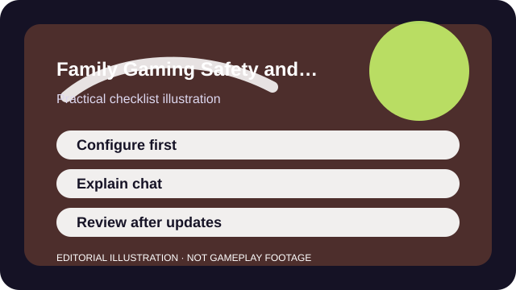

QUICK ANSWER
The short version
Configure the account before the game session, explain how chat and reporting work, and revisit the rules whenever the game or child changes.
Gaming safety works best as a mix of settings and conversation. A perfect parental-control menu does not help much if the child has no idea why a setting exists or what to do when a social moment feels wrong.
The goal is not to make every game risk-free. It is to reduce obvious exposure, slow down spending, and give a young player a simple script for what to do when something unexpected happens.

CHECKLIST
What to confirm before you change anything
- Set device-level and account-level family controls before the first public session.
- Require approval or friction for every purchase path, even if the game claims it is free.
- Walk through mute, block, and report tools together instead of assuming they are obvious.
- Create a short list of approved games or modes rather than relying on open discovery feeds.
- Explain one rule for friend requests and one rule for private messages in plain language.
This checklist moves the first conversation upstream. It is easier to explain limits before a favorite game or friend request makes the moment emotionally loaded.
SCENARIO
When one new social game suddenly becomes the whole household's request
Popular social games often arrive as a bundle of questions: voice chat, purchases, age ratings, user-generated content, and group pressure from school or friends. Saying only yes or no rarely teaches much. A setup conversation does.
That conversation should cover what the player can do on their own, what needs an adult, how to leave a bad interaction, and what kinds of spending or strangers are automatically off-limits in your house.
PROCESS
A repeatable way to work through it
Configure the account first
Privacy, communication, and spending controls are easiest to set before the child is already inside the game.
Preview the social surfaces together
Show where chat lives, who can send requests, and how to leave a room or block a person.
Create small house rules
Simple rules such as 'ask before accepting friend requests' work better than giant speeches.
Revisit after updates
Games change, children change, and a setting that made sense last year may not fit the current version or maturity level.
Good family safety is iterative. The settings reduce obvious risk, and the conversation teaches judgment that settings alone cannot provide.
COMMON MISTAKES
What usually makes the problem worse
Relying on one platform toggle
A device setting helps, but many games add their own communication or store layers inside the app.
Talking about spending only after a purchase happens
Store pressure works better against surprise than against a calm pre-game rule.
Assuming children will report discomfort immediately
Many young players need permission and language to describe what felt wrong.
SUCCESS CRITERIA
How to know the change actually worked
- The child can show you where to mute, block, report, and leave without guessing.
- Purchases require an adult step or at least obvious friction.
- You know what game spaces are being visited and why they are acceptable.
- Rules still make sense after a patch, school trend, or new device enters the picture.
A safe setup is not the one with the most restrictions. It is the one that the household can actually understand, remember, and maintain after the first week.
SOURCES AND LIMITS
Where to verify live details
- User-generated spaces and live events change faster than any one checklist can track.
- Age ratings and legal expectations vary by region and platform.
- No tool catches every social risk, so judgment and follow-up conversations still matter.
Menu names, defaults, and device behavior can change after updates. Use the linked official support surfaces for the current live details and keep this guide for the process around them.